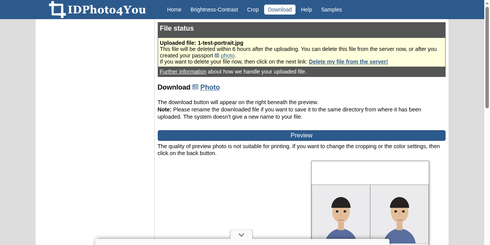
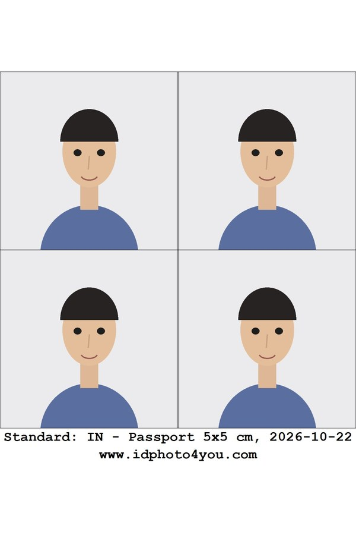

IDPhoto4You: make ID photo print sheets free in the browser, no sign-up
Need ID-size photos for an application? IDPhoto4You crops one photo and lays it out on a printable sheet in the browser, free and with no account. We tested the full flow anonymously; here is what the site confirms, what our test found, and why you should still check the photo rules in your own application instructions.
Quick facts
- Free browser tool that turns one photo into an ID-photo print sheet. No app, no account.
- The site's country dropdown lists 73 countries, including India, with vendor presets such as passport (3.5x3.5 cm and 5x5 cm), visa (2x2 inch), OCI and PAN card (2.5x3.5 cm).
- These presets are the vendor's size templates, not proof of acceptance by any authority. Check your own application's current photo rules before relying on any sheet.
- In our test, the full flow from upload to download worked anonymously, with no sign-up or payment.
- JPG uploads only, up to 10 MB; cropping is manual.
- Uploaded photos are stored during processing and deleted within 6 hours, according to the site's consent text.
What it does
IDPhoto4You takes a single photo and turns it into a printable sheet of ID-size photos. You pick a country, a document type and a print size from the site's dropdowns, upload a JPG, adjust brightness and contrast if needed, line up a crop frame on the face, and download a finished sheet. The country dropdown lists 73 countries; the India entry offers vendor presets for passport photos in 3.5x3.5 cm and 5x5 cm (2x2 inch), visa photos, Overseas Citizenship (OCI) and PAN card photos (2.5x3.5 cm). Print size options are 9x13 cm, 10x15 cm, 13x18 cm or a single photo.
One thing to be clear about: these presets are the vendor's own templates. We did not verify them against any issuing authority's current requirements, and a preset matching a document's name does not mean the resulting photo will be accepted. Photo rules change (dimensions, background, head size, recency), so treat the dropdown as a starting point and confirm against your application's own instructions. This tool is also not a replacement for any official photo capture process where one is required.
The site states it has operated since 2009 and shows its file rules clearly: JPG or JPEG only, 10 MB maximum, at least 130x200 pixels, and no scanned photos or documents.
Our test: upload to download, anonymously

We uploaded a drawn test portrait (not a real person) to the site's server, chose India and the "Passport 5x5 cm" preset, accepted the consent checkboxes, skipped the optional brightness adjustment, clicked Make Photo with the default crop frame and downloaded the result. No account, no email, no payment step appeared anywhere in the flow. Per the site's consent text, uploads that are not manually deleted are removed from its server within 6 hours.

A note on the numbers: we selected the print size the site labels "10x15 cm (4x6 inch)". The file we downloaded was 1200x1800 pixels with 300 DPI in its metadata, which works out to exactly 4x6 inches (about 10.2x15.2 cm), a standard photo-lab print size, though not exactly 10x15 cm. So the site's own label is approximate. The sheet carried 4 copies of the photo in a 2x2 grid with no watermark on the photos themselves. One detail to know: a small printed footer line with the preset name, the date and the site's web address sits below the photos, outside the crop areas, so it disappears when you cut the photos out, but it is part of the printed sheet.
How to use it
- Check your application's current photo requirements first (size, background, head position, recency) on the issuing authority's own instructions.
- Open idphoto4you.com and choose the country, document type and print size closest to those requirements.
- Select a JPG photo (plain background, facing forward works best) and tick the consent boxes.
- Optionally adjust brightness and contrast, then continue to the Crop page.
- Align the crop frame: bottom green line at the chin, upper line at the top of the head. Use the move and scale buttons, then click Make Photo.
- Download the sheet and print it at actual size on photo paper.
Limits and frictions
- No acceptance guarantee: the site's own consent text warns that photos made with the site may be rejected by authorities and that it takes no responsibility for that. Its presets are vendor templates, not verified against any authority's rules by us or, visibly, by the site.
- JPG only: PNG, HEIC and other formats need converting first.
- Cropping is fully manual. The site notes its earlier automatic face detection was discontinued, so you align the frame yourself.
- The site shows advertising, including pop-up overlays on the download page in our test.
- The print-size label is approximate: "10x15 cm (4x6 inch)" produced an exact 4x6 inch file in our test.
Privacy
The site works anonymously and asks you to accept its data handling before uploading: your photo is stored on its server during processing, you can delete it during the session via a "Delete my file from the server!" link, uploads not deleted by you are removed within 6 hours, and uploading a new file deletes the previous one. The connection is over HTTPS. These are the provider's own statements; we did not audit its servers or network. As with any photo upload, use a photo you are comfortable sending to a third-party server.
Why it matters for Indian users
ID-size photos come up constantly: passport and visa applications, OCI and PAN card paperwork, exam application forms, job applications and ID cards. A free browser tool that sizes, crops and sheets one photo can save a studio visit when you already know the exact specification you need, and the India presets (including PAN card and OCI labels) give you a starting template. The key step is still yours: confirm the current rules in your application's own instructions before submitting a home-made photo, and use any official photo capture process where the authority requires one.
Sources checked 23 October 2026: the IDPhoto4You homepage, its upload consent text and file rules, and our own end-to-end test of the upload-to-download flow, linked below.